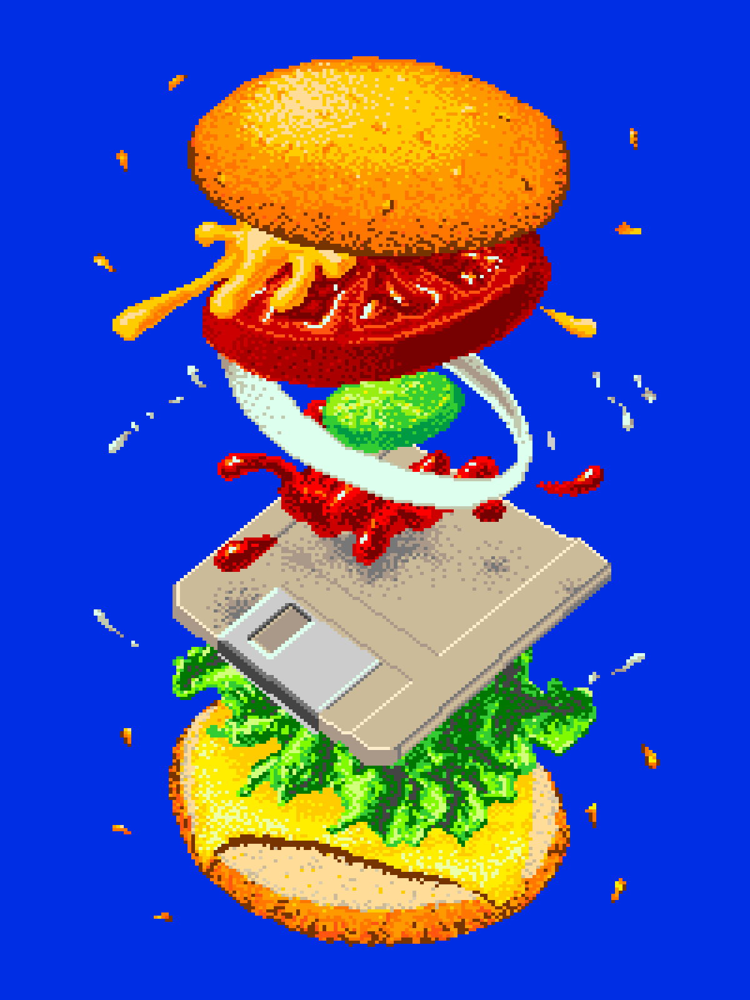

@ch0live
This is my blog space.
Writings are rambling at best.
I hope you enjoy.
🧰🛠️ Technical
🌏🛫 Travel
Posts will be up at the time I am somewhere or retrospectively depending on the time available to write.
Preparation
🇺🇸🗽 The United States
The North East
The Mid West
The West
- 19-07-24 Crowdstrike airport chaos
- 25-07-24 Geysers and Mountains
- ---WIP--- The Narrows of Zion
- ---WIP--- The Grand Canyon state
- ---WIP--- A Gamblers Paradise
- ---WIP--- Yosemite
- ---WIP--- Meeting Karl the Fog
- ---WIP--- Seals on the Pacific Coast
- ---WIP--- Los Angeles
- ---WIP--- Arches and Canyons
The Pacific North West
- ---WIP--- Portland
- ---WIP--- Seattle
- ---WIP--- Vancouver
The Central Pacific
🇯🇵🏯 Japan
Feel free to email me if any of the Japanese (日本語) I have written can be improved!
Hokkaido
Honshu
- 12-09-24 A night in Aomori City
- ---WIP--- Lake Towada
- ---WIP--- Hachinohe coastal hike
- ---WIP--- Morioka
- ---WIP--- Sendai
- ---WIP--- Nikko
- ---WIP--- Tokyo
- ---WIP--- Takayama
- ---WIP--- Kanezawa
- ---WIP--- Kyoto
- ---WIP--- Osaka
- ---WIP--- Fuji
🇮🇩🛕 Indonesia
🇦🇺🦘 Australia
- 28-10-24 Coffee Art and Old Clocks
- 31-10-24 Gold Coast
- ---WIP--- Sydney
- ---WIP--- Australian Capitol Territory
- ---WIP--- Namadgi & Kosciuszko National Parks
- ---WIP--- Melbourne
- ---WIP--- Blue Mountains
🇳🇿🌿 New Zealand
aɔˈtɛaɾɔa or aotearoa
- 18-11-24 Auckland
- ---WIP--- Waikato and Manawatū-Whanganui
- ---WIP--- Wellington
- ---WIP--- Christchurch
- ---WIP--- Tasman
- ---WIP--- West coast
- ---WIP--- Milford Sound
- ---WIP--- Queenstown and Wanaka
- 07-12-24 Almost the end

4 Byte Burger by Jack Haeye, 1985.
Remastered by Stuart Brown of Ahoy